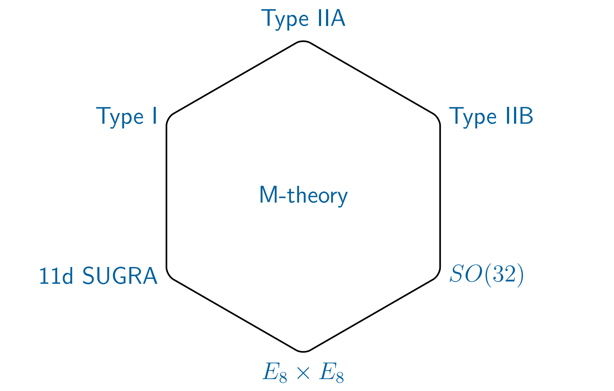

My Research: family friendly version
My research focuses on very specific aspects of String Theory and its ramifications.
〰 What string theory is
String theory is a field of Physics which describes small objects called strings. Its aim is to describe all the matter in our Universe from these strings only. They vibrate like guitar strings and each vibration gives rise to a particle.
〰 What string theory isn't (for now)
To this day, String Theory is not able to reproduce all of the known fundamental physics. In fact, string theory is not really a theory but rather a collection of theories. We do not yet know which of these theories is the one which can describe our Universe (if any).

You may already know that the cells that make up our body are themselves made up of smaller consituents: molecules. These molecules are in turn made up of atoms and atoms of protons, neutrons and electrons.
Does this diminishing of scales go on forever?
The truth is, no one knows... and it is likely that no one will ever know.
Indeed, our understanding of the world that surrounds us is limited to how precisely we can observe it. If we can never reach infinite precision, then it is fair to say that we can never be absolutely sure about our understanding of reality (To make this statement more failproof, one would need further philosophical concepts).
Nevertheless, I don't believe that Physics ever aimed to provide this absolute description of nature. All that we wish to provide is a description that is the least wrong and to achieve this we can assert that a given object is the fundamental building block of our Universe without being too wrong.
This is where String Theory enters the ring! (or kind of, more on this later)
With this description of our Universe, everything that surrounds us is made of tiny strings. These strings, just like guitar strings, can vibrate with different frequencies. Each frequency giving a new kind of particle (eg. electron, quarks, etc).

As an aside, allow me to clear out any confusion about the word theory whe used in the context of Physics.
When used in a non-Physics-related context, you may agree that the word theory is somewhat similar to hypothesis or claim. There is this notion of something that needs to be verified/cross-checked with evidence.
In Physics, however, this word has a slightly different meaning. In my opinion, the best word to describe it would be model. A theory is nothing but a model meant to describe a physical process in some given context (here the word context is important).
The theory of General Relativity for example, is way more than a hypothesis. It is a model of gravity which describes the dynamics of celestial objects to great precision. In that sense, one could say that it is a theory that has been 'proven' (take the work proven with a sea of salt).
What about Newton's theory of gravity?
You might know that this theory was superseded by Einstein's theory of General Relativity. So what gives? Was this theory just a theory in the sense that it was wrong? Clearly it should be considered wrong since we know General Relativity is the correct theory, right?
Unfortunately (or fortunately), no. Newton's theory was as much of a theory as Einstein's was, in the sense that they are both models that describe gravitational attraction between massive objects. The context mentioned above plays an important role here. As a model, a theory always comes with a label that indicates when it is valid. For example, we could say that Newton's label says valid for masses up to the size of a bus whereas Einstein's would say valid up to masses the size of millions of Suns. This subtlety in what we mean by a theory allows us to understand when to use a model instead of another.
As a concluding remark to this aside, due to how we define a theory in Physics, we know that the theory of General Relativity or the Standard Model of Particle Physics are not expected to work forever and for everything. That is why we are working on things like String Theory, to expand the label given on these theories. Additionally, since some theories can have a common context in which they are valid, one may choose one theory over another to describe what they are doing. When computing how much cement a building requires, there is no need to consider the full theory of General Relativity. Newton's theory describes the physics at hand just as much, while remaining a lot simpler to use.

Very often one would talk about string theory as a model for our Universe. The problem is that String Theory should rather be seen as a formalism which leads to many (really many) potential theories of our Universe. The collection of such theory is called the String Theory Landscape and to it are associated the Swampland Conjectures (criteria that could help find the correct string theory)..

Even with all its problems, String Theory is our closest attempt at a fundamental description of our Universe which unites all forces into one formalism (the so-called theory of everything). From a particular type of String Theory, one can already get Einstein's equations of General Relativity as a by-product.
Blip blop
Blip blop
Holographic Entanglement Entropy in a \(\mathcal{N}=(0,1)\) 6d CFT with a 2d defect
This paper presents a solution to 11d supergravity given by the interestion of M2-M5 branes in the presence of KK monopoles.
These solutions are interesting as they are asymptotically locally \(AdS_7/\mathbb{Z}_k\times S^4/\mathbb{Z}_{k^\prime}\).
This allows us to consider the 6d CFT dual to the solution (seen as living on the boundary of the \(AdS_7\) spacetime).
By construction the M2-M5 configuration is 1/4-BPS. The addition of the set of M5\(^\prime\) branes doesn't change that fact.
However, a configuration where the KK monopoles are 'added' breaks a further half of the supersymmetry, rendering this configuration 1/8-BPS.
As such, the configuration would exhibit large \(\mathcal{N}=(0,4)\) on the 2d defect. However, the M2 and M5 branes are further smeared over directions transverse to the M5\(^\prime\) causing the reduction of the R-symmetry from large \(\mathcal{N}=(0,4)\) (with R-symmetry algebra \(\mathfrak{so}(4)\times \mathfrak{so}(4)\) ) to small \(\mathcal{N}=(0,4)\) (with R-symmetry \(\mathfrak{so}(4)\cong \mathfrak{su}(2)\times \mathfrak{su}(2)\) ).
In the following table we represent this brane intersection, as introduced in 2007.16167, with the following properties:
- \(-\) : direction filled by the brane
- \(\cdot\) : direction transverse to the brane
- \(\sim\) : direction along which the brane is smeared
- ISO: Taub-NUT direction of the KK-monopole
| \(t\) | \(x\) | \(r\) | \(\theta^1\) | \(\theta^2\) | \(\chi\) | \(z\) | \(\rho\) | \(\varphi^1\) | \(\varphi^2\) | \(\phi\) | |
|---|---|---|---|---|---|---|---|---|---|---|---|
| KK\(^\prime\) | \(-\) | \(-\) | \(-\) | \(-\) | \(-\) | \(-\) | \(-\) | \(\cdot\) | \(\cdot\) | \(\cdot\) | ISO |
| M5\(^\prime\) | \(-\) | \(-\) | \(-\) | \(-\) | \(-\) | \(-\) | \(\cdot\) | \(\cdot\) | \(\cdot\) | \(\cdot\) | \(\cdot\) |
| M2 | \(-\) | \(-\) | \(\cdot\) | \(\cdot\) | \(\cdot\) | \(\cdot\) | \(-\) | \(\sim\) | \(\sim\) | \(\sim\) | \(\sim\) |
| M5 | \(-\) | \(-\) | \(\cdot\) | \(\cdot\) | \(\cdot\) | \(\cdot\) | \(\sim\) | \(-\) | \(-\) | \(-\) | \(-\) |
| KK | \(-\) | \(-\) | \(\cdot\) | \(\cdot\) | \(\cdot\) | ISO | \(-\) | \(-\) | \(-\) | \(-\) | \(-\) |
In this paper it was also shown that the near horizon limit of the brane intersection described above (\(r\rightarrow 0\)) is given by an \(AdS_3\times S^3/\mathbb{Z}_k\times\tilde{S}^3/\mathbb{Z}_{k^\prime}\) geometry fibered over a Riemannian surface.
Furthermore, by performing a certain coordinate transformation, the aforementioned solution is related to an 11d uplift of a 7d domain wall solution studied in 1707.06152.
Through this identification it becomes clear how one recovers the \(AdS_7\) asymptotics locally.
This 11d uplift is also our starting point for the Holographic Entanglement Entropy computation we wish to carry out.

Starting from a 7d ansatz with \(SO(3,2)\times SO(3)\) symmetry, 1707.06152 shows that the BPS equations become a set of flow equations. We can start from these flow equations, fix a gauge and then integrate them out. This will allow us to choose the integration constants in a way which recovers dimensional consistency.
The ansazt for the metric can be written locally as
\(ds^2_7=e^{2U(\mu)}(ds^2_{AdS_3}+ds^2_{S^3})+e^{2V(\mu)}d\mu^2\)
The BPS equations are then equivalent to
| \(U'=\frac{2}{5}e^{V}f_7\) |
|---|
| \(X_7'=-\frac{2}{5}X_7^2D_{X_7} f_7\) |
We are free to pick a gauge for \(V\). As such, we follow the authors in choosing
\(e^{-V}=-\frac{2}{5}X_7^2D_{X_7}f_7\)
Finally, we find the following solution
| \(e^{2U}=\frac{m}{g^2}\left(\frac{\mu}{1-\mu^5}\right)^{1/2}\) |
|---|
| \(e^{2V}=\frac{25}{2g^2}\frac{\mu^6}{(1-\mu^5)^2}\) |
| \(X_7=\mu\) |